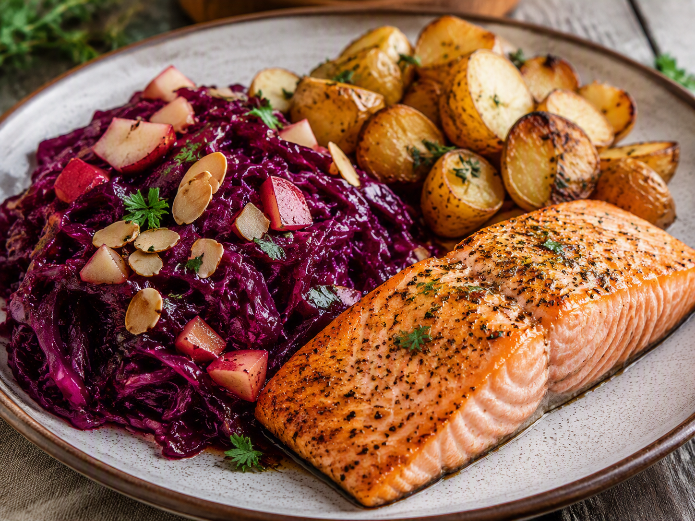

Woensdag · Vis
Zalm met rode kool, appel, aardappelen en amandelschaafsel
Gezonde gezinsmaaltijd voor drie personen: zalm met rode kool, appel, aardappelen en amandelschaafsel.

Ingrediënten
- 3 stukjes zalm
- 410 g diepvriesrode kool
- 750 g aardappelen, in gelijke stukken
- 2 appels, in blokjes
- 30 g amandelschaafsel
- 1 el olie
- 1 el limoensap
- 1 tl dille
- Peper naar smaak
Bereiding
- Kook de aardappelen in circa 20 minuten gaar, of rooster ze met de olie 30 minuten in een oven van 200 °C.
- Verwarm de rode kool met de appelblokjes en een klein scheutje water gedurende 15 minuten.
- Rooster het amandelschaafsel droog in een koekenpan en zet apart.
- Bak de zalm in een licht ingevette pan of in de oven tot deze net gaar is. Breng op smaak met limoensap, dille en peper.
- Serveer de zalm met aardappelen en rode kool. Strooi het amandelschaafsel over de rode kool.